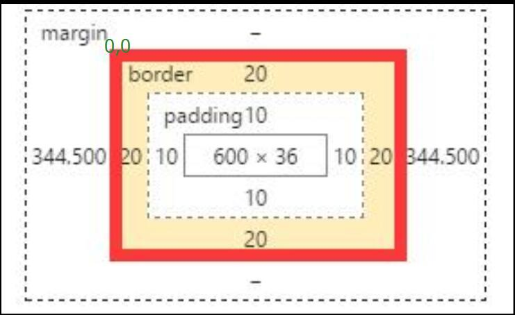
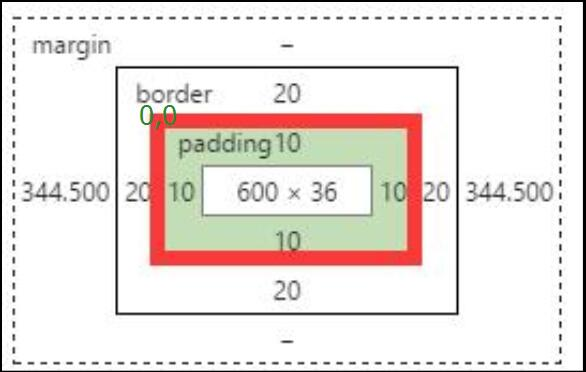

首先：这里说的event，是指MouseEvent，就是当鼠标点击后，可以获取的事件实例，而我将细细谈谈event的xy里面的琐碎的事。
screenX MouseEvent :The X coordinate of the mouse pointer in global (screen) coordinates.clientX MouseEvent :The X coordinate of the mouse pointer in local (DOM content)
coordinates.
offsetX MouseEvent :The read-only property provides the offset in the X coordinate
of the mouse pointer between that event and the padding edge of the target node.(moz/webkit)movementX MouseEvent:The X coordinate of the mouse pointer relative
to the position of the last mousemove event.pageX UIEvent:pageX 是鼠标事件触发时，鼠标指针相对于整个文档 X 坐标上像素点的整数值。这一属性同时也参照了页面的水平滚动距离。layerX UIEvent:The read-only property returns the horizontal coordinate of the
event relative to the current layer.event.x/MouseEvent.x但是它其实是MouseEvent.clientX的别名，并且在 MSD推荐使用后者代替。(我瞄了眼兼容表：其实就是Firefox不兼容 =_=)兼容表：
screenX/screenY：W3C+ IE+ Firefox+ Opera+ Safari+ chrome+
clientX/clientY：W3C+ IE+ Firefox+ Opera+ Safari+ chrome+
offsetX/offsetY：W3C- IE+ Firefox- Opera+ Safari+ chrome+
movementX/movementY：W3C- IE- Firefox+ Opera- Safari- chrome+
pageX/pageY：W3C- IE- Firefox+ Opera+ Safari+ chrome+
layerX/layerY：W3C- IE- Firefox+ Opera- Safari+ chrome+
x/y：W3C- IE+ Firefox- Opera+ Safari+ chrome+ 这里的参照的点击坐标是指电脑屏幕的左边上角为(0，0)坐标了。
screenX的兼容性是最高的之一，但是我想到的用途就是计算两次点击之间的位移了=_=
这里的参照的点坐标是浏览器展示页面的部分,就是相当于浏览器全屏浏览时候除了滚动条的部分。
这里的参照的点坐标是源事件元素，就是相对于点击元素右上角为(0,0)
注意1：参照上面的兼容表：firefox应该是不支持该属性的，但是经我实验，在(4.2)版本上市支持，并最终在MDN上找到依据。
注意2：要考虑上 盒子模型 上的 padding 和 border
对于 chrome来说： ,参照系的(0,0)是在位于包含border的左上角。
而对于firefox和IE11来说:,参照系的(0,0)是在于包含padding的左上角，也就是说如果在点击比padding的左上角还要左上角的区域将会得到负数。